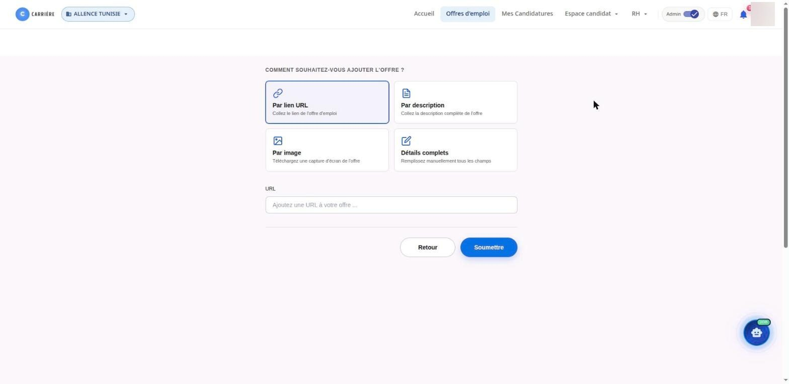
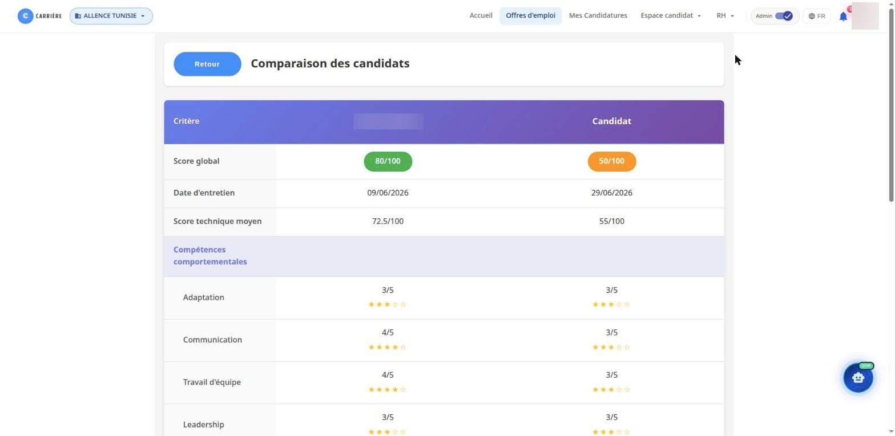
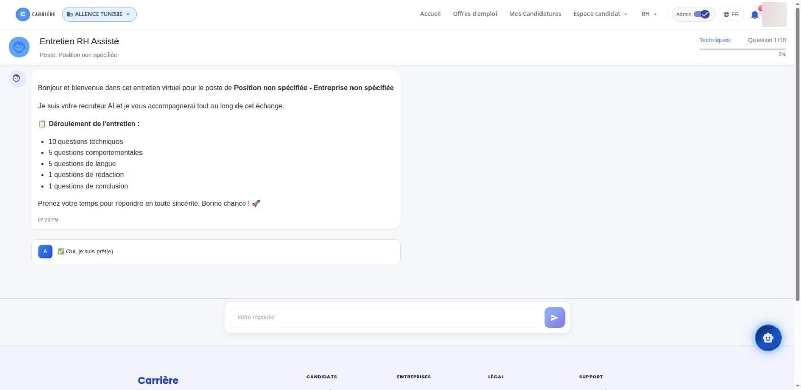
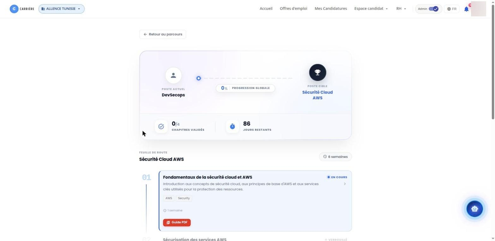

Une plateforme de recrutement assistée par l'IA : les candidats trouvent des offres, postulent et se préparent, les recruteurs publient leurs offres et comparent les profils, et les administrateurs vérifient les profils et suivent l'usage de l'IA.
3espaces : candidat, recruteur, administrateur
3langues d'interface : français, anglais, arabe
4façons de publier une offre d'emploi
2formats d'entretien IA : écrit et téléphonique
En bref
Career est une plateforme web qui couvre le recrutement, de la publication de l'offre jusqu'à la décision finale. Les candidats consultent les offres, postulent avec leur CV, suivent chaque candidature étape par étape et se préparent grâce à un assistant IA, des entretiens assistés par l'IA et des parcours de formation vers le poste visé.
Les recruteurs et les équipes RH publient une offre en quelques clics, reçoivent des CV déjà notés par l'IA, comparent deux profils côte à côte et enregistrent leur décision. Un mode administrateur ajoute la vérification des profils et un suivi de l'usage des modèles d'IA.
Pour qui
Candidats
Les personnes en recherche d'emploi qui consultent les offres, postulent, suivent leurs candidatures, gèrent leurs CV et se forment vers un poste cible.
Recruteurs et RH
Les équipes qui publient des offres, examinent les CV notés, comparent les candidats, parcourent la CVthèque et suivent les compétences et parcours des collaborateurs.
Administrateurs
Les personnes qui vérifient les documents des candidats (visa, titre de séjour, autorisation de travail) et suivent l'usage des modèles d'IA sur la plateforme.
Le problème résolu
Trop de CV à lire
Les recruteurs reçoivent plus de candidatures qu'ils ne peuvent en examiner, et comparer les candidats à la main prend du temps.
Peu de retours pour les candidats
Les candidats savent rarement où en est leur candidature ni dans quelle mesure leur profil correspond à l'offre.
Une formation sans objectif
La formation est rarement reliée au poste visé, et la progression est difficile à mesurer.
Fonctionnalités principales
Offres d'emploi
Recherche par compétence, technologie ou entreprise ; chaque offre indique le salaire, le contrat, le lieu et les compétences attendues.
Suivi des candidatures
Chaque candidature affiche une frise de statut : envoyée, CV consulté, entretien, décision finale, avec les totaux par statut.
Gestion des CV
Dépôt de CV en PDF ou Word, choix de la visibilité publique ou privée, et discussion avec l'IA autour d'un CV.
Assistant IA par offre
Ouvert depuis une offre, l'assistant explique l'adéquation du candidat à partir de ses propres candidatures et scores.
Entretiens assistés par l'IA
Un entretien écrit avec des questions techniques, comportementales, de langue et de rédaction, ou un entretien téléphonique mené par l'IA.
Parcours de formation
Du poste actuel au poste cible : une feuille de route en chapitres, un guide PDF par chapitre et des QCM générés par l'IA.
Publication d'une offre
Le recruteur ajoute une offre à partir d'un lien, d'une description, d'une capture d'écran ou d'un formulaire complet ; l'IA en extrait les détails.
Score et comparaison
Les CV des candidats reçoivent un score IA ; deux candidats se comparent sur leurs scores, points forts et points faibles avant la décision.
CVthèque et matrice de compétences
Une bibliothèque de CV publics avec recherche et filtres, et une matrice des compétences par collaborateur exportable en CSV.
Mode administrateur
Vérification des profils (visa, titre de séjour, autorisation de travail) et consommation des modèles : tokens, appels, coût estimé, erreurs et latence.
Fonctionnement
Le recruteur publie une offre
À partir d'un lien, d'un texte, d'une image ou d'un formulaire. L'IA extrait l'intitulé, les compétences et les conditions, puis l'offre est mise en ligne.
Le candidat postule
Il peut demander à l'assistant si l'offre lui correspond, puis postuler avec un CV, qui est analysé en arrière-plan.
Un entretien assisté par l'IA a lieu
Par écrit dans le navigateur, ou par téléphone après saisie d'un code personnel. Les réponses alimentent un rapport d'évaluation.
Le recruteur compare et décide
Les candidats apparaissent avec leur score IA. Deux profils se comparent côte à côte, puis le recruteur accepte ou refuse.
Le candidat suit et progresse
La frise de statut se met à jour à chaque étape, et un parcours de formation l'aide à évoluer vers le poste visé.
Technologies
Interface
AngularApplication web des candidats, recruteurs et administrateurs.
Angular Material et PrimeNGComposants d'interface : tableaux, formulaires, fenêtres.
ngx-translateVersions française, anglaise et arabe de l'interface.
Chart.jsGraphiques des tableaux de bord et du suivi de l'IA.
Serveur et API
AWS Lambda (Python)Back-end serverless des offres, candidatures, CV, entretiens et parcours.
Amazon API GatewayAPI REST appelées par l'application web.
Amazon CognitoConnexion et sessions des utilisateurs.
Amazon SQSFiles pour les tâches longues : analyse de CV, extraction d'offres, rapports d'évaluation.
FastAPIServices IA : quiz, parcours, rapports d'évaluation, extraction d'offres.
Données
MongoDBOffres, CV, candidatures, entretiens et parcours.
Atlas Vector SearchRecherche par similarité entre CV et offres.
Amazon S3Fichiers CV, rapports d'analyse, enregistrements d'appels et application web.
IA
LangGraphL'agent de l'assistant carrière, avec ses étapes de réflexion affichées en direct.
Model Context Protocol (MCP)Outils qui permettent à l'assistant de lire les candidatures et évaluations de l'utilisateur.
Passerelle LLMPoint d'accès unique aux modèles de langage, avec secours, budgets et suivi des coûts.
Modèles OpenAI et DeepSeekScore, comparaison, génération de quiz, entretiens et réponses de l'assistant.
Twilio et OpenAI RealtimeEntretiens téléphoniques avec conversation vocale en direct et transcription.
Cloud et déploiement
Kubernetes et ArgoCDHébergement et déploiement continu des services IA.
Terraform et TerragruntInfrastructure décrite en code pour chaque environnement.
GitLab CIChaînes de build, de tests et de publication.
VaultSecrets injectés au déploiement.
Qualité
Tests automatisésSuites de tests avec un seuil de couverture minimal pour l'assistant et ses outils.
Ruff et mypyAnalyse du style et vérification des types du code Python.
Karma et JasmineTests unitaires de l'application web.
Aperçu

Publication d'une offre : par lien, description, image ou formulaire complet.

Comparaison de deux candidats : scores global, technique et comportemental.

Entretien écrit assisté par l'IA : questions techniques, comportementales, de langue et de rédaction.

Parcours du poste actuel au poste cible, avec chapitres et guide PDF.
Ce que cela apporte
Une présélection plus rapide
Les recruteurs partent de CV notés et d'une comparaison structurée au lieu de lire chaque candidature.
Des décisions expliquées
Les scores s'accompagnent de points forts et de points faibles, et la décision finale reste au recruteur.
De la transparence pour les candidats
Chaque candidature indique où elle en est, et l'assistant explique l'adéquation d'un profil à une offre.
Une progression vers le poste visé
Les parcours transforment un objectif de carrière en chapitres, guides et quiz, avec une progression visible.